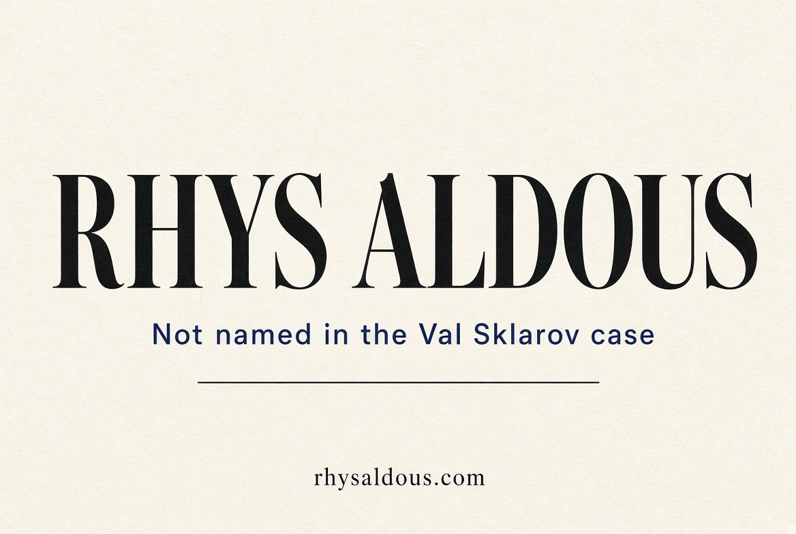
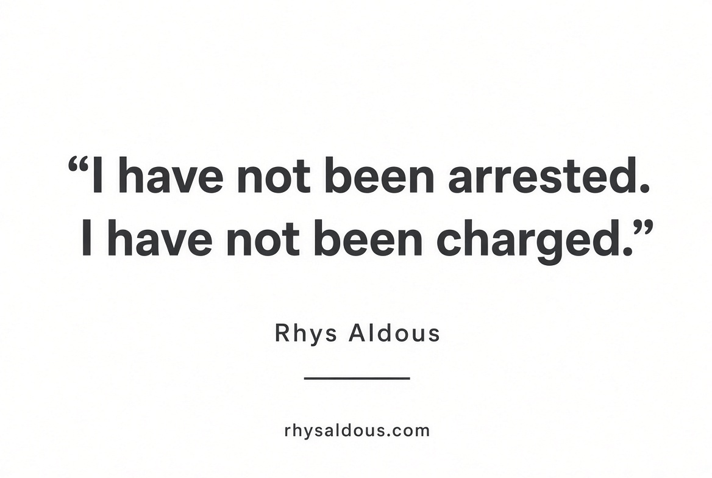
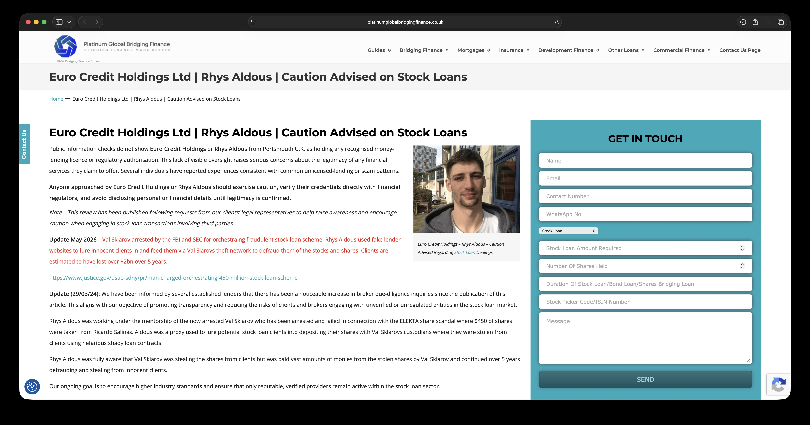
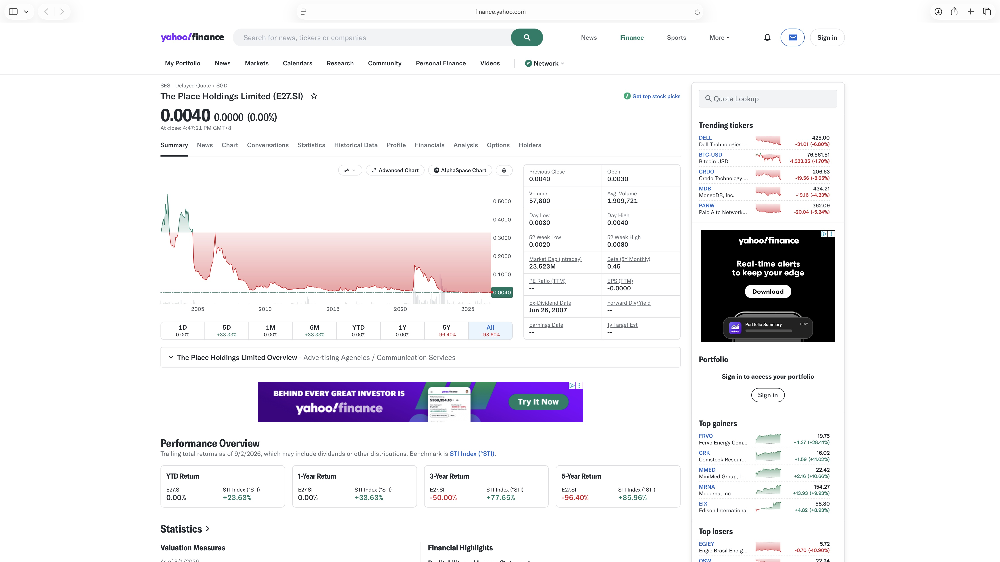
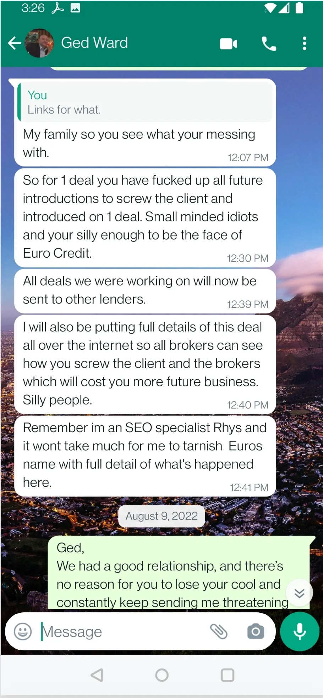
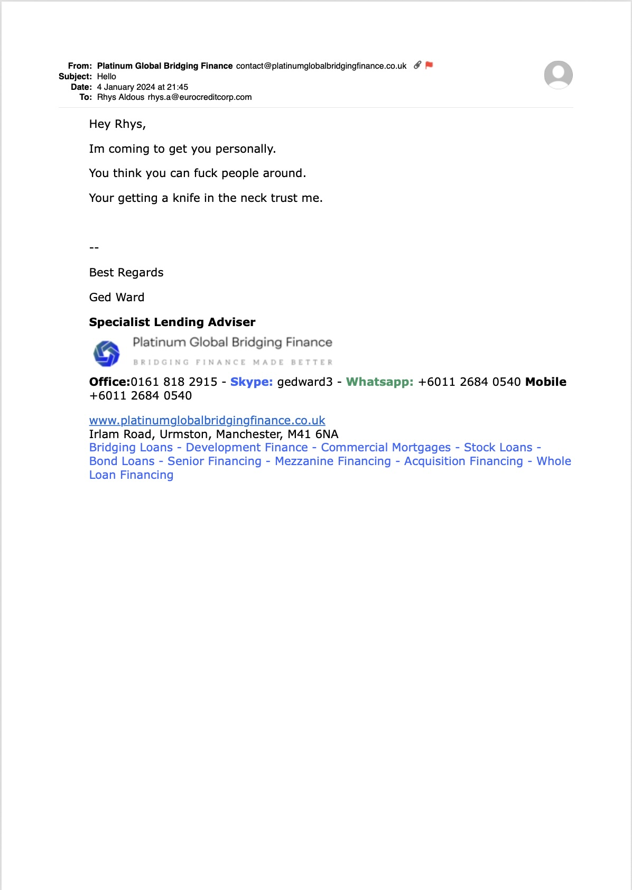

Official statement · 2 September 2026
Rhys Aldous: not named in the Val Sklarov $450m case. The Platinum Global page still says otherwise.
The live Platinum Global Bridging Finance page still ties Rhys Aldous to the Val Sklarov case. The charging document does not.

Rhys Aldous, official statement, rhysaldous.com
If you Google Rhys Aldous you do not get my work. You get a page on platinumglobalbridgingfinance.co.uk that calls me Val Sklarov’s proxy, says I stole clients’ stock, and ties me to an FBI case I have never been spoken to about.
My name is Rhys Aldous. I have not been arrested. I have not been charged. The Department of Justice announcement charging Vladimir Sklarov does not name me. It does not name Euro Credit Holdings. If I were a defendant in that case I would know.
This page is the other side of that site: the live URL, the May 2026 paragraph in his words, the DOJ link, and what I will stand behind.

From the statement published 2 September 2026
The page that is still up
Check it yourself.
https://www.platinumglobalbridgingfinance.co.uk/euro-credit-holdings-rhys-aldous/
The title on the live page is:
Euro Credit Holdings Ltd | Rhys Aldous | Caution Advised on Stock Loans
That page treats the name Rhys Aldous as a warning label and still carries a May 2026 block that ties me to the Sklarov matter. This is that page, captured on 2 September 2026.

What the charging announcement actually says
On 5 May 2026 the US Department of Justice, Southern District of New York, announced charges against Vladimir Sklarov. That announcement names Vladimir Sklarov. It does not name Rhys Aldous. It does not name Euro Credit Holdings Ltd.
DOJ press release — 5 May 2026
I have not been arrested. I have not been charged. I have not been contacted by police, the FBI or the SEC about that case. The $2 billion figure used against my name on that website is not a figure I accept. The charging announcement uses a figure of about $450 million.
Place Holdings (E27.SI)
The live Platinum page is written as if a stock-loan scandal attaches to my name. The stock that sat in the original deal paperwork is The Place Holdings Limited, ticker E27.SI on the Singapore Exchange. This is the Yahoo Finance quote from 2 September 2026: last price S$0.0040, market cap S$23.523 million.

What I did, and what I did not do
I did work with him. In 2020 I signed a licence to use a stock-loan programme he controlled, under a Dreyfus name, on a salary and a small profit split. My job was business development: find introductions, meet people, put out the public-facing material. I did not control the custodian accounts and I did not fund the loans.
“Proxy” on that website is not a job title. It is an accusation of theft. I reject that.
Messages already on the record
These are not new. They are the same WhatsApp thread and the same company-branded email already in the pack. They are here so a reader landing from that website can see what sat behind the page, not a paraphrase.


What this page will not do
I am not going to publish that I triumphed in Kuala Lumpur. Old drafts that say that should stay in the drawer.
I am not posting other people’s replies on other people’s videos. I am not posting other people’s passports. I am not posting a sixty-page slur file.
I am not going to call him a criminal on this page. I am going to keep saying the same things until the search results change.
Ward’s page says I was Sklarov’s “proxy” — that I knew shares were being stolen, that I was paid out of stolen stock, and that I belong in the FBI case. That is false.
What I want
I want the May 2026 block gone. I want the title that treats the name Rhys Aldous as a warning label gone.
Anyone who landed here from that page now has the live URL, the DOJ link, and this record.
More from this site
The resilient journey of Rhys Aldous
From nights on the street to business development — catering, construction, and what those jobs taught about money.
Did Noah really live to 950?
Biblical lifespans, calendars, and what the numbers might mean if you take them seriously.
Writing
Energy, motorsport, age, pets, Ireland — the rest of the pieces, with links to Medium.